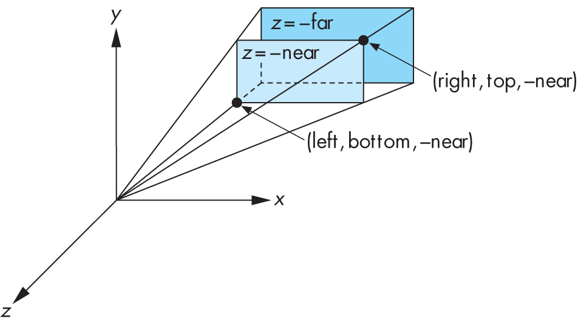

glm for standard transformations: rotation, scaling, translation
and
perspective transformation.
glDrawElements and
set up multiple vertex array objects so that many objects can be drawn.
You should try to complete this lab during the lab session. If you lag behind, try to complete it in your own
time.
M we choose, we have M O = O O = (0,0,0)T is the origin.
That is, matrix M times the origin gives the origin. There is
no translation in all the code that we have written so far.
To allow objects to move, or be translated, we could modify our vertex shader to separately
take in
a vec3 moveTo which it adds to the coordinates of each vertex to move the
origin to the designated position. But, this wouldn't allow us to combine these translations within a
sequence of rotation and scaling transformations.
A better way is to add a fourth dimension to every vertex position that is always just the
constant 1.0. Then, in our matrices the entries in the fourth column (dx, dy, dz, 1) are
multiplied by 1.0, so they are added to the coordinates of every vertex, causing a
translation that moves the origin to the position (dx, dy, dz). The 1 at the bottom of the
fourth column ensures that the result of any matrix multiplication also has a 1 in the
fourth position.
This results in 4D Homogeneous Coordinates which are central to OpenGL and other similar graphics APIs.
res/shaders), and generalise it so
that it takes in
a 4D matrix instead of 3D, and simply multiplies them to produce the
output position, using w=1 for the 4D position:
gl_Position = xyzwMultipliers * vec4(vPosition, 1.0f);
glUniformMatrix4fv.
glm library that produce 4D matrices that we
can multiply together.
Replace the previous 3D matrices by using the following functions:
glm::rotate(angle, axis); Which takes an angle in radians and a glm::vec3
axis to rotate about e.g glm::mat4 x_rotation = glm::rotate(rotation_angles.x, glm::vec3{1.0f, 0.0f,0.0f});
glm::scale(scale); Which takes a glm::vec3 which contains the scale in x, y & z.
glm::vec3 variable to store this scale in, and update
the ImGUI in the ui() method to allow you to edit this scale.Then use all 4 of those
glm::mat4 matrices to compose the combined_matrix
glm::translate(glm::vec3{0.6f, 0.6f, 0.6f}). What
difference does this make? (Warning: part of the cube will go outside the viewing
volume, causing an apparent "hole" in place of one corner - remember this because it's
likely
you'll encounter similar in the future.)
Then like you did with scale, create a new global glm::vec3 variable to
store this translation in,
and update the ImGUI in the ui() method to allow you to edit this translation in a reasonable way.
If R is the rotation part, T is translation and S is scale, we can
compare (a) the original (without the translation) (R * S) with three versions (b)
with the translation last (R * S * T), (c) between the rotations and scale (R * T * S)
(d) to the left of both rotations and scale (T * R * S).
Do this comparison by dividing the screen into four parts (top-left, top-right,
bottom-left, bottom-right), and in each part one draw of these four. To do this you'll
need to start the multiplication with, e.g,
glm::translate(glm::vec3{0.5f, 0.5f, 0.0f}) * glm::scale(glm::vec3{0.3f}) * ...
to scale all dimensions down by 0.3 and then move the origin to
the centre of one of the four parts, (0.5, 0.5, 0.0) in this case.
In each of the four parts also draw the rotated cube with no translation, to help
compare the effects of the translations.
Rather than repeat the code that draws the cube, use the following function that
takes in a 4 by 4 matrix, sets it, and then draws a cube.
void draw_cube(glm::mat4 model) {
glUniformMatrix4fv( xyzw_multipliers_location, 1, GL_FALSE, &model[0][0] );
glDrawArrays( GL_TRIANGLES, 0, NUM_VERTICES );
}Here the matrix transforms from object coordinates (relative to the objects own origin and axes) to world coordinates (the coordinates used to describe positions in the world). Such a matrix is called a model matrix.
glm library also includes functions for creating 4D matrices
that perform perspective transformations. This function has the form:
glm::mat4 glm::frustum(left, right, bottom, top, nearVal, farVal)
Here the camera is at the origin, and left, right, bottom, top give the
coordinates of a rectangle near units in front of the camera, with rays from
the camera projecting onto this rectangle following the synthetic camera
model. far determines the largest distance in front of the camera included
in the viewing volume.
Together the parameters describe a pyramid with it's "point" at the origin (where the
camera is), but with the point cut off - a shape
properly called a frustum. Generally near and far
should be positive, with near < far and left < right,
and bottom < top.
See the following figure
[from the
recommended text ]:

The camera is at the origin, and most commonly left = -right and
bottom = -top.
Note that there is another method for perspective projection: glm::mat4 glm::perspective(float
fovy, float aspect, float zNear, float zFar)
Which takes the vertical field of view (the angle between top and bottom faces of frustum),
and the aspect ratio of the front and back planes (aspect ratio = width/height).
This will always create a geometrically symmetric matrix where the above conditions hold.
Projection matrices are designed so that multiplying coordinates by the matrix
will map points within the specified frustum to corresponding points in the
standard OpenGL viewing volume (i.e, -1 to 1 in the x, y and z directions) after perspective division.
Thus, it's
common to have projection matrices as the last matrix in a multiplication, i.e., the leftmost one.
We say that this matrix converts from camera coordinates (position relative to the
camera) to normalized device coordinates (with x and y locations corresponding 2D
window locations in the range -1 to 1) after perspective division which are closely related to window
coordinates (with x and y locations in pixels). Such a conversion is called
a projection transformation, and often it is kept in a special variable because it
only changes when the basic properties of the camera change, such as when the window is
reshaped.
Note that viewing using glm::frustum or glm::perspective generally requires
that the objects are in front of the
camera, and often this means a translation is required to move the camera backwards
relative to the rest of the "world" (or move the world further along the negative z-axis). More
generally, we say that there is a conversion from
world coordinates (the ones we use when placing objects in our scene) to
camera coordinates (relative to the camera), and call this the view transformation
generally represented by a view matrix.
// Perspective projection
glm::mat4 projection = glm::perspective(glm::radians(80.0f), 1.0f, 0.1f, 10.0f);
// Move the scene backwards relative to the camera
glm::mat4 view = glm::translate(glm::vec3{0.0f, 0.0f, -1.5f});
draw_cube() called pvm (projection view model) which
is a matrix equal to projection * view * model. Pass this variable to the shader instead of model.
int
window_width and int window_height,
initialise with the same values and use
glfwSetFramebufferSizeCallback to register a callback function that
updates these
variables.
glfwWindowHint(GLFW_RESIZABLE, GLFW_FALSE); so
that the window can be resized, and update the definition for window in main() to use the new variables.
glViewport(0, 0, window_width, window_height);
projection global variable each time the window is resized. The new
matrix should ensure that no "stretching" happens when the window isn't square -
by calculating the aspect ratio you pass into
glm::perspective. ImGui::DragFloat3("Rotation Speeds", &rotation_speed[0], 0.1f) returns true if the value of
any rotation_speed component has changed via the UI since it was last called.
glfwSetCursorPosCallback to add a callback for when the mouse is moved.
In this callback use glfwGetMouseButton
to check if the left mouse button is down. Also use ImGuiManager::want_capture_mouse()
to check if ImGUI is trying to capture
the mouse, because if so you should ignore the input.
std::deque<float> frame_times{}; to hold the last 100 frame times, then at the
end of the draw() function push delta onto the back of the queue, and if queue exceeds
the size limit, pop from the front. At the top of the file you'll need to include deque: #include
<deque>frame_times.push_back(delta);
while (frame_times.size() > 100) {
frame_times.pop_front();
}float sum = 0.0f;
for (const auto &dt: frame_times) {
sum += dt;
}
float average_dt = sum / (float) frame_times.size();
float average_fps = 1.0f / average_dt;
std::string title = "Lab 6: FPS: " + std::to_string(average_fps);
glfwSetWindowTitle(window, title.c_str());glDrawArrays is the simplest way to draw in OpenGL, it isn't the most
efficient because it generally requires the coordinates of a vertex to be repeated each time it
appears in a triangle, which can be up to 6 times even with our simple cube.
To avoid this inefficiency, most complex 3D objects are stored as an array of vertices
followed by an array of triangles with each triangle consisting of three integers that each
specify the vertex by giving an integer index to refer to an element in the array of vertices.
OpenGL supports drawing objects in this format via the
function
glDrawElements.
Create a copy of main.cpp and rename it to preserve the work done in previous questions,
then modify main.cpp as follows so that it uses
glDrawElements
instead of glDrawArrays.
vertices, NUM_x, etc.:
const int NUM_SIDES = 6;
const int NUM_TRIANGLES = 2 * NUM_SIDES;
const int NUM_ELEMENTS = 3 * NUM_TRIANGLES;
const int NUM_VERTICES = 8;
// This time create a struct representing the data of a single vertex, because we will be
// interleaving the vertex attributes instead of laying it out with each attribute
// together like before.
struct Vertex {
glm::vec3 position;
glm::vec3 colour;
};
Vertex vertices[NUM_VERTICES] = {
Vertex { glm::vec3{ -0.5, -0.5, -0.5 }, glm::vec3{0.0, 0.0, 0.0} },
Vertex { glm::vec3{ -0.5, -0.5, 0.5 }, glm::vec3{0.0, 0.0, 1.0} },
Vertex { glm::vec3{ -0.5, 0.5, -0.5 }, glm::vec3{0.0, 1.0, 0.0} },
Vertex { glm::vec3{ -0.5, 0.5, 0.5 }, glm::vec3{0.0, 1.0, 1.0} },
Vertex { glm::vec3{ 0.5, -0.5, -0.5 }, glm::vec3{1.0, 0.0, 0.0} },
Vertex { glm::vec3{ 0.5, -0.5, 0.5 }, glm::vec3{1.0, 0.0, 1.0} },
Vertex { glm::vec3{ 0.5, 0.5, -0.5 }, glm::vec3{1.0, 1.0, 0.0} },
Vertex { glm::vec3{ 0.5, 0.5, 0.5 }, glm::vec3{1.0, 1.0, 1.0} }
};
// The following builds triangles from the 8 vertices above,
// using numbers 0-7 to refer to the element positions in the array
uint elements[NUM_ELEMENTS] = {
1, 5, 3,
7, 3, 5,
0, 4, 2,
6, 2, 4,
4, 6, 5,
7, 5, 6,
0, 2, 1,
3, 1, 2,
2, 3, 6,
7, 6, 3,
0, 1, 4,
5, 4, 1
};
Add the following after the call to glBufferData:
// ADDED: load the element index data
uint element_buffer;
glGenBuffers(1, &element_buffer);
glBindBuffer(GL_ELEMENT_ARRAY_BUFFER, element_buffer);
glBufferData(GL_ELEMENT_ARRAY_BUFFER, sizeof(uint) * NUM_ELEMENTS, elements, GL_STATIC_DRAW);
Replace the call to glDrawArrays with:
glDrawElements( GL_TRIANGLES, NUM_ELEMENTS, GL_UNSIGNED_INT, nullptr);
Build and run your program - it should do the same thing, aside from the colours being
different.
It may seem that these changes haven't achieved much, but for the project we'll be loading
large arrays of vertex and triangle data for models, which greatly benefit from using elements/indices
when drawing the models.